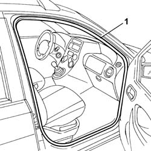
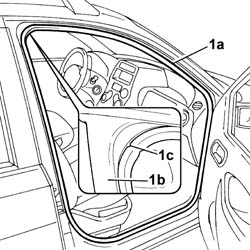

7005A34 front side door compartment seal r r
- Path
- Procedures > 70 FITTINGS > 7005 PASSENGER COMPARTMENT FRONT SIDE DOORS > 7005A front side door assembly > 7005A34 front side door compartment seal r r
- Kind
- repair procedure (removal / refitting; the operation number is the code)
- Applies to
- all engines; all production periods
- Interactive page
- https://sloeber94.github.io/elrnDB-fPnd/en/#/2753033
Applies to: all engines; all production periods
 Removing
Removing
 Refitting
Refitting7040L40 front compartment scuff strip - r r
1. Prise off and remove the seal.

Applies to: all engines; all production periods
Refitting
RemovingCheck that the seal has no cuts or cracks.
If this is not the case, replace the seal.
1. Fit the seal (1a) in its seating, starting from the top corner (1b) and positioning the reference mark (1c) on the seal at the centre of the corner.

Applies to: all engines; all production periods